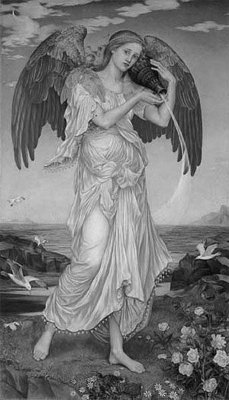

Prokris güzel mi güzel, çok alımlı genç bir kızdı. Üstelik içi neyse dışı da öyleydi. Ve onun bütün yaşamını, içinde hep bir kor gibi ışıyan bir sevgi yönlendiriyordu...
İşte böyle gönlünce yaşayıp giderken günlerden bir gün, rüzgârlar tanrısı Ayolos'un (Aiolos) torunu Kefalos (Kephalos), daha ilk gördüğünde ona vuruluverdi. Ama Prokris uzun süre yüz gönül vermedi ona. Ne onun tanrı oğlu olması, ne de hanları sarayları umurundaydı... Ama gene de Kefalos bırakmadı onun peşini ve bir sürü koşturmaca ve çilelerden sonra gönlünü edip evlendi Prokris'le. Ve bu evlilikten sonraki birliktelikleri de çok güzel yürüdü... Üstelik karşılıklı bölüştükleri aşklarıyla dillere destan oldular...
Kefalos alışık olduğu üzere her gün, gül parmaklı şafak tanrıçası Eos'un uyandığı saatte ormana çıkıyor; hem geziyor, hem de av amacıyla geyik, tavşan izi sürüyordu... Bu arada şafak tanrıçası, bu yakışıklı delikanlıyı her sabah göre göre sonunda ona sırılsıklam âşık olup çıktı!.. Kendini ona beğendirebilmek için de çeşit çeşit ve rengârenk giysilerle donanmaya, bütün ormanı daha büyük bir coşkuyla ısıtıp ışıklandırmaya başladı. Üstelik her sabah tanrıça Eos, sevgilisi ormana gelmezden önce, yeri göğü ve ormanı; mavinin, yeşilin, sarının en çekici tonlarıyla boyamaya başladı. Ne var ki Kefalos'un gözü, karısı Prokris'ten başkasını görmüyordu. Bu yüzden kıskançlıktan küplere binen tanrıça Eos bir sabah; "Sen karın Prokris'e çok bağlısın, biliyorum," dedi. "Bakalım fırsat bulursa o seni aldatmayacak mı?" Bu sözler bir anda içini altüst etti avcının. Ama üstünde de fazla durmak istemedi. Tanrıça kıskançlığından böyle söylüyor, deyip geçti...
Kefalos bir ara, ülkesi kralının komşu ülkeye açtığı bir talan savaşına katıldığı için karısı Prokris'ten ayrı yaşamak zorunda kaldı... İşte şafak tanrıçası Eos'un söyledikleri bu ayrılık sırasında bir zıpkın gibi oturdu yüreğine. O yüzden de karısı Prokris'in kendisine gerçekten bağlı kalıp kalmadığını sınayıp görmek istedi... Hemen üst baş değiştirdi. Şafak tanrıçası da onun bu değişimine yardımcı oldu. Öylesine değişmişti ki Kefalos; duru bir su birikintisindeki görüntüsünü kendisi bile tanıyamadı!.. Doğruca evinin yolunu tuttu. Ama yolu üzerinde içi içini yemiyor da değildi; böylesi çirkin bir denemeden caymak düşüncesi geçmeye başladı içinden. Ne var ki şafak tanrıçasının içine soktuğu o korkunç kuşku, onun yüreğini beynini habire yiyip eliyordu...
Evine vardığında kapıyı açan hizmetçilerin çok üzgün ve acılı olduklarını gördü. Kılık ve görünümüyle bambaşka biri olup çıkan Kefalos, bir aile yakını olarak tanıttı kendini. Sonra da onlara niçin böyle üzgün olduklarını sordu. "Efendimizi çok uzaklara, savaşa alıp götürdüler!.. Uzun süredir haber de alamıyoruz..." dediler. Bu sözler çok sevindirdi Kefalos'u. "Demek hizmetlilerim bile beni çok seviyormuş!" dedi kendi kendine. Hizmetliler, hanımları Prokris'in yanına götürdüler onu. Karısı Prokris, hizmetlilerinden çok daha üzgün duruyordu. Gene Kefalos; kendini çok yakın ve inandırıcı bir aile dostu olarak tanıttıktan sonra aynı soruyu sordu karısı Prokris'e. O da uzun süredir kocasından bir haber alamadığını, gece gündüz hep onu düşündüğünü söyledi. Sonra da üstüne basa basa; sevgilileri birbirinden ayıran, insanı insanlıktan çıkaran savaşları hiç sevmediğini söyledi. Kefalos havalara uçacaktı sevincinden! Hemen eski haline dönüp kim olduğunu açıklamak, karısı Prokris'i uzun uzun kucaklamak geçti içinden... Artık onu denemekten cayar gibi oldu. Ancak tanrıça Eos'un o alaycı sözleri çın çın ötmeye başladı gene kulaklarında!.. O yüzden, "Ne kadar da güzelsiniz oysa," diye yakınlaşmaya çalıştı Prokris'e. "Kocanız uzaklarda... Sizi unutmadığını nereden bileceksiniz? Siz burada onu düşüne düşüne sararıp solarken, o oralarda mutlaka birini bulmuştur!" Prokris, daha yeni tanıştığı yabancının böyle yüzsüzce yaltaklanmalarına yüz gönül vermedi. "Ben kocamı seviyorum ve ona hep bağlıyım!" diye kestirip attı...
Birkaç gün daha Kefalos'un başka başka söylemlerle sürdürdüğü bu yollu yakınlaşma girişimlerine hep kulak tıkadı Prokris. Her seferinde kocasına olan bağlılığını yineledi. Bu sözlerini kanıtlamak için onun yokluğunda ördüğü ve nakışladığı kumaşlardan söz etti... Hatta onlardan birini getirip Kefalos'un eline tutuşturuverdi!.. Kefalos kumaşı ilgiyle incelemeye başladı. Gerçekten de karısı Prokris'in büyük bir titizlikle dokuyup nakışladığı kumaşın üstünde, elinde ok tutan, avcı giysileri içinde yakışıklı bir genç vardı. Bu genç ormanda usul usul yürüyor, bir yandan da gözleriyle sağı solu yokluyordu. Bir geyik izini değil de sevgilisinin izini sürüyor gibiydi...
Prokris kocasının avcılığı çok sevdiğinden, bu yüzden ona hedefini hiç şaşırmayan bir ok armağan ettiğinden de söz etti... Bu ok nereye atılırsa oraya saplanır; avını kesinlikle cansız yere yıkardı!.. Prokris bu oku onun anısına, salondaki duvara asmıştı. Onu da gösterdi yabancıya...
Karısının bu bağlılığına diyecek bir söz bulamıyordu Kefalos. Ne var ki tanrıça Eos'un o uğursuz sözlerine kilitlenmişti bir kez... O yüzden hiçbir şey anlamamış gibi gene kışkırtıcı sözlerle ayartmaya çalıştı onu... Bu sözler sırasında bir süre susuverdi Prokris... Kefalos onun bu susuşunu, bir anlık sendelemesini görünce; "Demek beni aldatırsın ha, utanmaz kadın!" diye bağırmaya başladı... "Bak ben senin kocanım! Demek benim yokluğumda beni aldatacaktın!" Bu yollu savurduğu hakaretlerin arasına, bütün kadınların aşağılık olduğu sözünü de sıkıştırıverdi!..
Zavallı güzel Prokris, şaşkınlıktan donakaldı. Bir yanıt veremedi. Yalnızca yazgısına ve Kefalos'a ilençler yağdıraraktan evden canhıraş ayrıldı... Dağlara vurdu kendini. Bundan böyle yalnız yaşayacaktı... Çok geçmeden Kefalos kendini suçlu bulmaya başladı. Tanrıça Eos'un kurbanı olduğunu anladı. O yüzden güzel karısını bulabilmek için her yere başvurdu. Sonunda bir çoban aracılığıyla izini bulabildi... Özürler üstüne özürler diledi karısından...
Prokris daha fazla uzatmadan onunla barıştı. El ele verip eski günlere dönmeye çalıştılar. Kefalos gene her sabah ava çıkmaya başladı... İşte bu av sabahlarının birinde, bu kez de kocası Kefalos'tan kuşkulanacağı tuttu Prokris'in! Her sabah ormana çıkan kocasının oralarda bir sevdiği olamaz mıydı? Bu kuşkunun dürtüsüyle hemen ormana vurdu kendini Prokris. Dağ bayır kocasını ararken haliyle çok yoruldu... Önüne ilk çıkan çalılıkların arasına oturdu biraz dinlenmek için... Şafak tanrıçası Eos da çeşit çeşit giysilerinin saçtığı renk cümbüşüyle boğuyordu ormanı... Aynı sıralarda da hem yürüyen, hem av arayan Kefalos'un rengârenk ışıklardan başı dönmeye başladı.
Bir aralık yanından geçtiği çalıların kıpırdadığını fark etti. Bu kıpırtıyı bir geyik sanan Kefalos, karısı Prokris'in armağan ettiği hedefini şaşırmaz oku, gerdiği yaya taktı ve çalıların içine fırlatıverdi!..
Prokris çok acı, ama çok kısa bir çığlık atabildi yalnızca...

Şafak Tanrıçası Eos